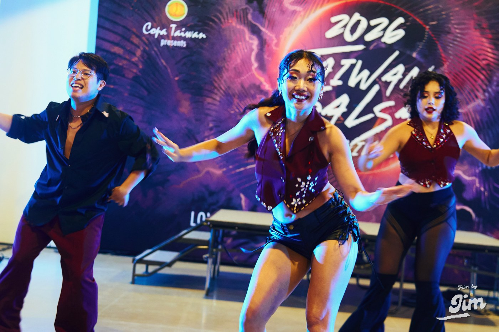

← JimFrame
TSC 2026 · 11.20

TAIWAN SALSA CARNIVAL 2026 · FRI 11.20
表演之夜
精選
星期五晚上的舞台表演，每組挑出的精選 84 張。點照片看大圖、可直接下載。攝影 Jim Lin（@jimframe）。
想要自己那組的完整照片？
這裡是精選、有浮水印的版本。各組完整、高畫質無浮水印的照片，私訊 Instagram
@jimframe
，告訴我你是哪一組（或傳一張這頁的照片給我）。
✕
‹ 上一張
下載
下一張 ›